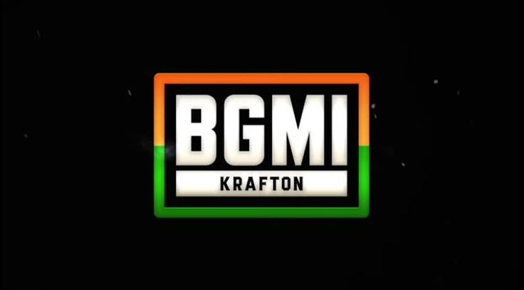
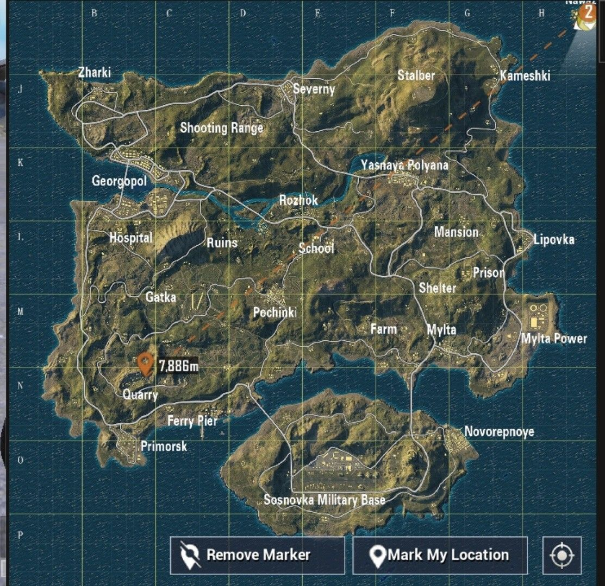
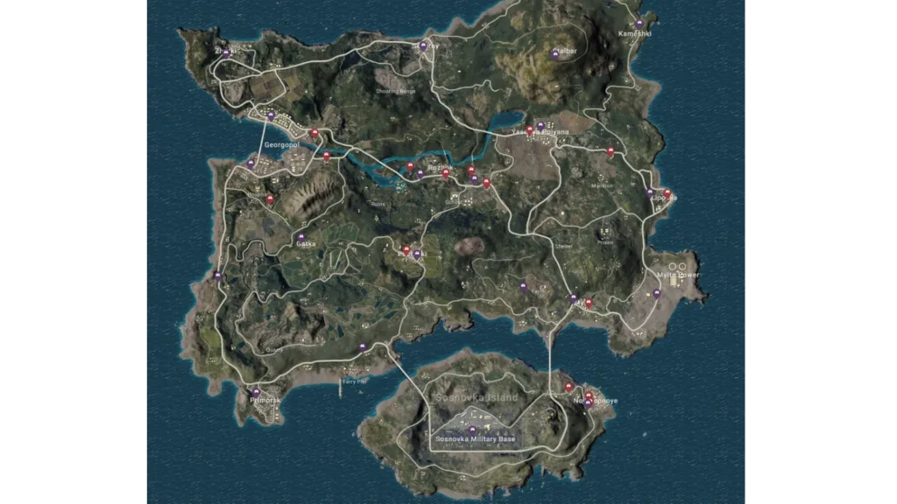

BATTLEGROUNDS MOBILE INDIA
Map guide By Ankit Guchait
BGMI Earngel Map is one of the Most Popular and favorite Map for most of the BGMI Players. It’s a large, diverse map that offers a variety of landscapes, and terrains for players to explore and engage in battles.
Erangel is an 8×8 kilometer map, making it one of the larger maps in BGMI (Battlegrounds Mobile India). It features a mix of open fields, forests, hills, and urban areas. There are also several bodies of water, including a river and a few small lakes.

High Loot Places in Erangel Map
- Sosnovka Military Base: This is one of the best high loot areas on Erangel. It offers a wide range of weapons, armor, and attachments. Be prepared for intense combat as it’s a popular drop spot.
- Georgopol:Georgopol City and Georgopol Port are known for their high loot density. You can find a variety of loot in the city’s buildings and warehouses, as well as at the port.
- Pochinki:Pochinki is a medium-sized town with numerous buildings that often contain good loot. It’s a popular drop location and can get quite crowded.
- Mylta Power:Mylta Power, an industrial area in the southern part of the map, provides ample loot opportunities, including weapons, armor, and medical supplies.
- School (Pochinki School): The school building in Pochinki is a high-risk, high-reward location. It can yield excellent loot, but it’s also a hotspot for early-game battles.
BGMI Erangel Map Vehicle Spawns & Garage Locations
